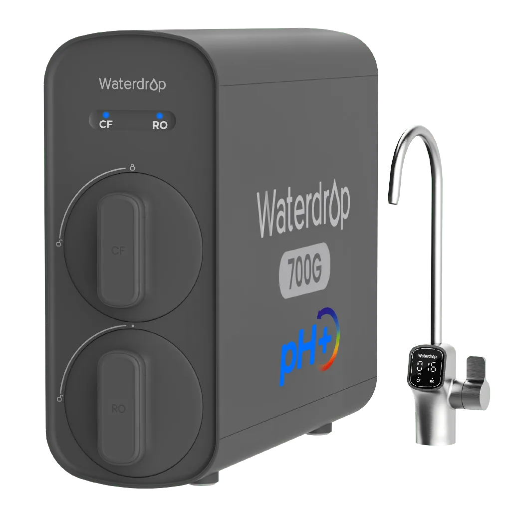

Direct Flow RO
Waterdrop G5P700A Alkalischer Umkehrosmose Wasserfilter 700 GPD
G5P700A Alkalischer Umkehrosmose Wasserfilter 700 GPD: aktuelle Umkehrosmoseanlage aus dem deutschen Waterdrop-Sortiment mit den auf der Herstellerseite dokumentierten Leistungs-, Filter- und Bedienmerkmalen.
369,99 €
Technische Daten
| Modell | G5P700A |
| Bauart | Tanklose Untertisch-Umkehrosmoseanlage |
| Filtration | 8-stufig, RO-Membran 0,0001 µm und alkalische Mineralisierung |
| RO-Leistung | 700 GPD |
| Mineralisierung | Ja, alkalische/mineralische Nachbehandlung |
| Heißwasser | Nein |
| Kaltwasser | Nein |
| Reinwasser-Abwasser-Verhältnis | Nicht separat veröffentlicht |
| Bedienung | Intelligenter Wasserhahn mit Filterstatusanzeige |
| Filterwechsel | Vor-/Nachfilter ca. 6–12 Monate; RO-Membran modellabhängig bis 24 Monate |
| Tank | Tanklos |
| Installation | Tanklose Untertischanlage; DIY-Wechselkartuschen |
| Zertifizierung | NSF/ANSI 372 (bleifreie wasserberührte Komponenten) |
| Abmessungen | Nicht separat veröffentlicht |
| Garantie | 1 Jahr laut Vergleichstabelle des Herstellers |
| Mineralien | Calcium, Magnesium, Natrium und Kalium |
| Filterlebensdauer | Je nach Kartusche ca. 6–12 Monate |
| Schadstoffreduktion | Unter anderem Chlor, Blei, Fluorid, Schwermetalle sowie PFOA/PFOS |
| Platzbedarf | Tankloses Design, laut Hersteller bis zu 70 % weniger Platz |
Datenhinweis
Preis, Bild und technische Angaben stammen von der verlinkten offiziellen Produktseite. Varianten und Verfügbarkeit können sich ändern.